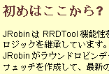

Credits
|
Bytemark |
|
Matthew Bloch from Bytemark provided an excellent hosting solution for our main web site. We asked for a small place for our set of HTML/PHP files, but we ended with a fully functional Linux virtual machine to play with. Bytemark say that shared hosting products can't compete with the flexibility of their Linux Virtual Machines. It sounded like propaganda to us, especially considering their very low prices. But in the end we were amazed how well it worked! Our web site, forum and bug tracker became operative in almost no time. And we still have a big playground for our future ideas and applications. We could not ask for more!
|
Many people helped us to make JRobin as good and useful as possible. Here is a short list of them, and you will find many others on our Forum site:
- Marc Vanbrabant helped in finding some deeply hidden bugs in the MRTG-demo application. He did an excellent testing job and I hope to see him working on future versions of JRobin in the near future. He also created a .NET client for the JRobin-MRTG server. And it works :)
- Pieter Olivier provided a patch for the Inspector utility to support file names specified on the command line.
- Vadim Tkachenko from the DIY-Zoning project forced me to improve the code in many areas. Prior to 1.3.1 release, JRobin was quite slow when it comes to creation of really big (> 10Mb) RRD files. He also provided a huge file with real data that can be used for stress testing of JRobin.
- Jukio Saitoh provided Japanese translation of JRobin's home page.
- Oscar Mauricio Cordero translated JRobin-MRTG page into Spanish. Mauricio also provided full Spanish version of MRTG-demo client. It will be included in some future distribution of JRobin for sure. Just be patient, Mauricio :)
- Kasper Fock managed to use JRobin MRTG app in a J2EE environment. His questions were inspiring.
- Per Soderlind is trying to port JRobin from Java to C#. Good progress so far. Since I don't know a single thing about C#, he is on his own :)
- J.F.Zarama and Louis J. Romero had many useful comments, they were with us from the very first day.
- Yashima from Germany discovered some subtle bugs and submitted many interesting questions and comments.
JRobin core library which performs all essential RRD operations (create, update, fetch, graph, last, xport and dump) does not require any external jar to be present for its normal operation. However, portions of the distribution (like MRTG demo) require these fine (open source) java libraries:
- XML-RPC library from the Apache Web Services project.
- SNMP library from Jon Sevy, Drexel University
Copyright © 2003, 2004 Sasa Markovic & Arne Vandamme. All Rights Reserved.